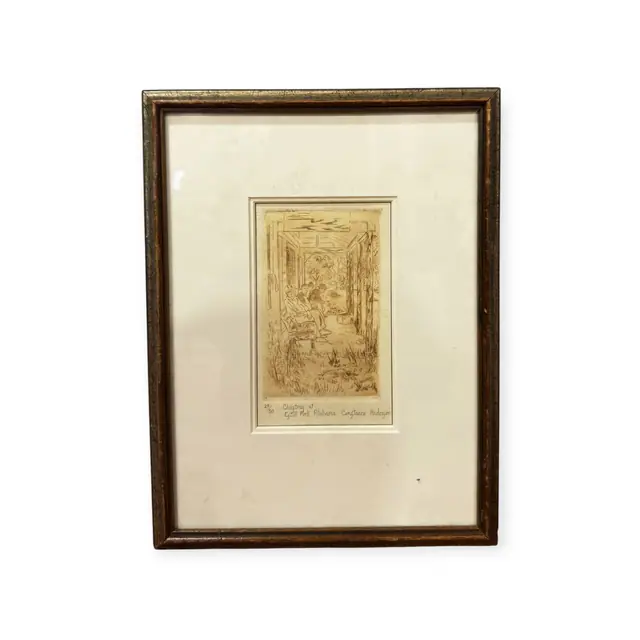
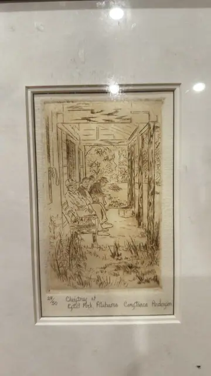
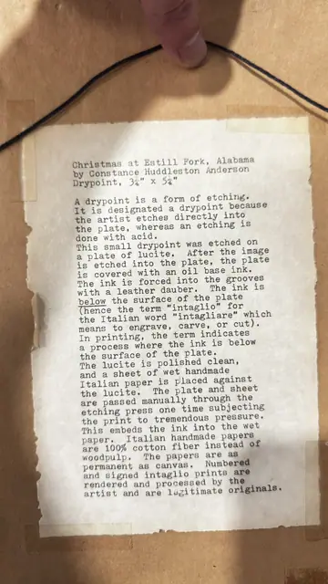

Paintings & Prints
Signed Drypoint Christmas at Estill Fork Alabama, Constance Huddleston Anderson, Numbered Edition, Framed
Constance Huddleston Anderson · mid to late 20th century
Price Upon Request



About the Item
Constance Huddleston Anderson. A small, finely worked intaglio print in warm sepia-brown ink: three or four figures sit bundled on a bench in the shadowed breezeway of a plank cabin, looking out through the open passage to sunlit trees and rough grass beyond. The image is built entirely from nervous, scratchy drypoint line, with dense cross-hatched shadow inside the passage and open white paper for the light outside. Printed on cream handmade paper with a visible plate impression and deckled edges, double matted in white. Medium: drypoint etching on handmade Italian paper. Signed in pencil below the plate, lower right, reading "Constance Anderson". Edition: 24/50. Accompanied by a certificate: Typed sheet taped to the backing board giving title, artist, medium and plate size (3 1/4" x 5 1/4") and explaining the drypoint process; it carries no issuer name or signature. Inscribed on the reverse or mount: 24/50; Christmas at Estill Fork Alabama Constance Anderson; Christmas at Estill Fork, Alabama / by Constance Huddleston Anderson / Drypoint, 3 1/4" x 5 1/4"; A drypoint is a form of etching. It is designated a drypoint because the artist etches directly into the plate, whereas an etching is done with acid.. Condition: Print clean and unfaded; the typed documentation sheet on the back is torn at the edges and toned, held with old tape.
Details
- Creator:
- Constance Huddleston Anderson
- Creation Year:
- mid to late 20th century
- Dimensions:
- Height: 13.0 in (33.02 cm)
Width: 10.0 in (25.4 cm)
outside of frame - Medium:
- drypoint etching on handmade Italian paper
- Edition:
- 24/50
- Period:
- 20Th
- Condition:
- Offered in the condition shown in the photographs.
- Reference Number:
- VO-200
- Documentation:
- Typed sheet taped to the backing board giving title, artist, medium and plate size (3 1/4" x 5 1/4") and explaining the drypoint process; it carries no issuer name or signature.
- Gallery Location:
- 24/50; Christmas at Estill Fork Alabama Constance Anderson; Christmas at Estill Fork, Alabama / by Constance Huddleston Anderson / Drypoint, 3 1/4" x 5 1/4"